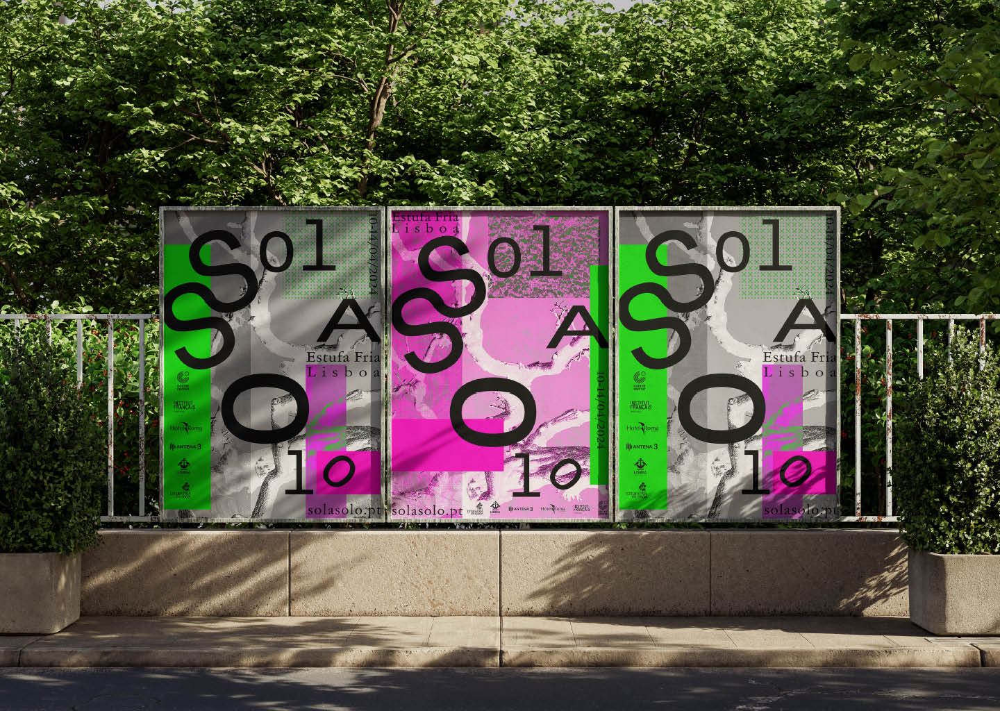
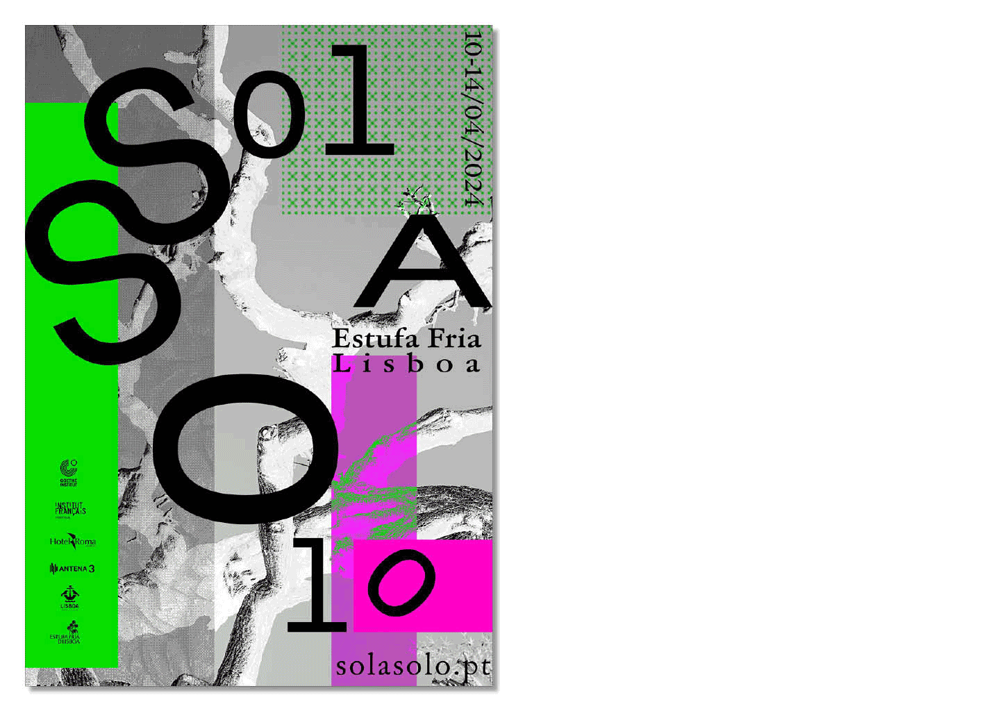
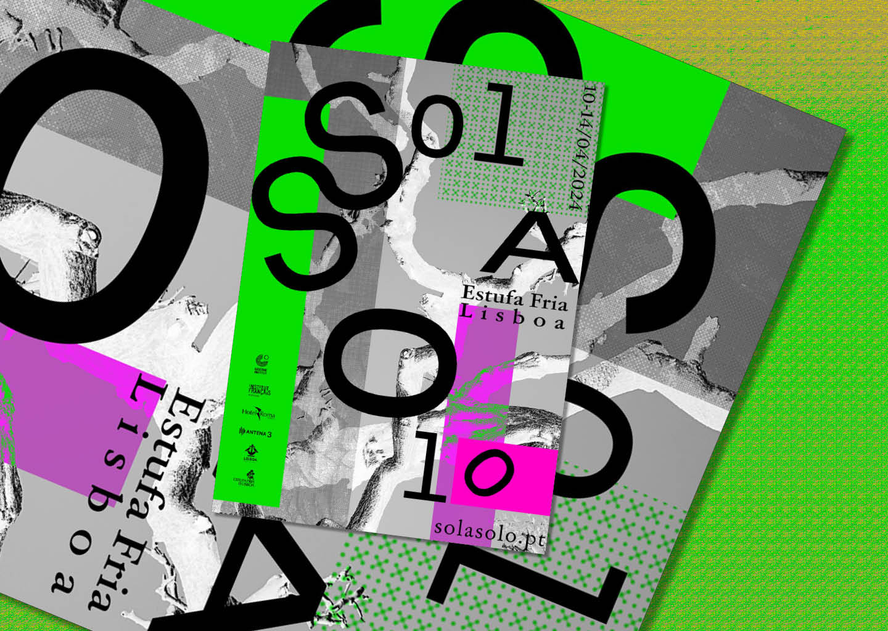
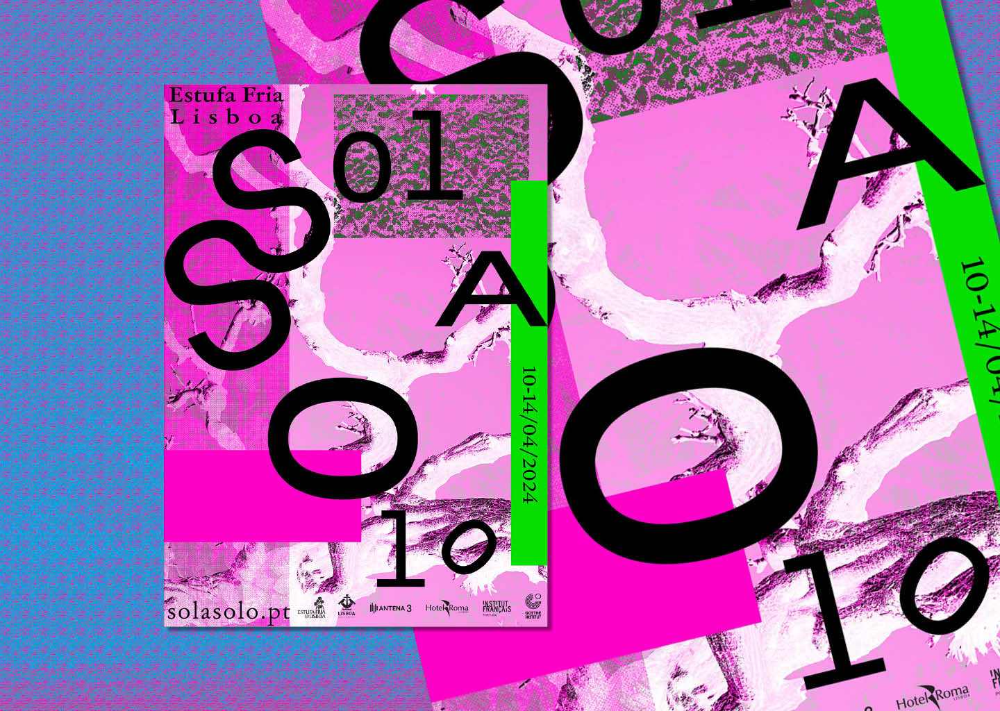
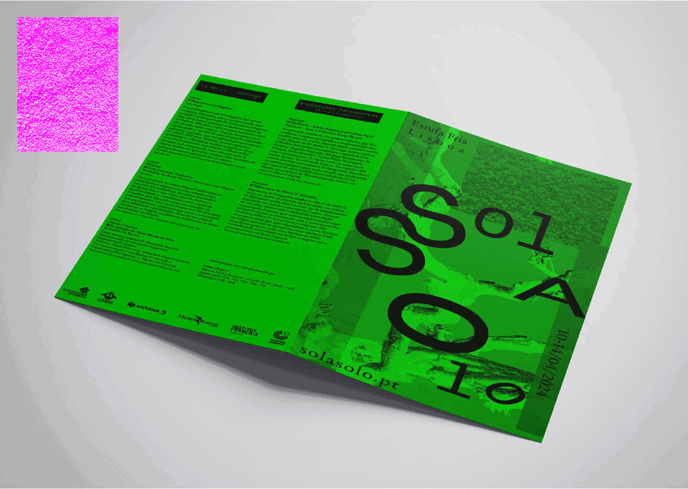
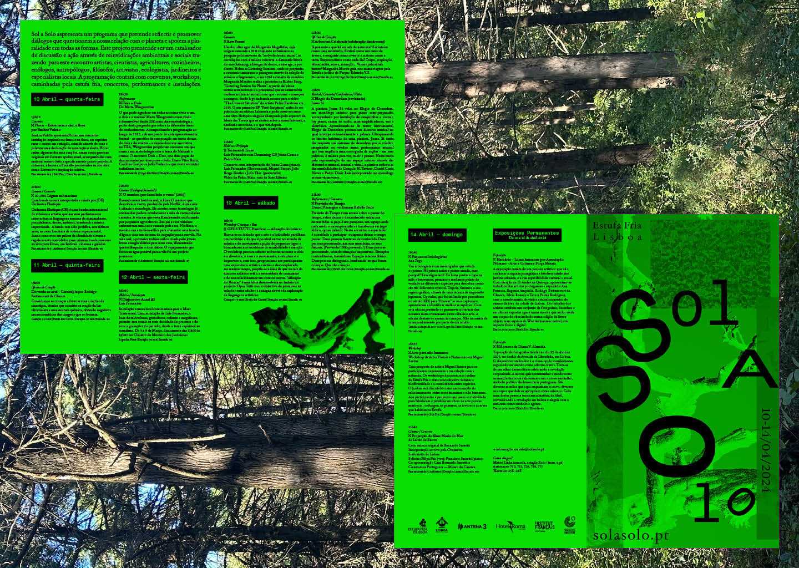

Sol A Solo
2023
This academic project is a branding for a fictitious alternative and ecological festival that would happen in Estufa Fria in Lisbon. I created some posters and a programme as the base identity for this festival that captured the essence of something that is environmental and ecological, mixed with something that is experimental, alternative and technological.
Academic Project, Branding & Identity, Poster Design





